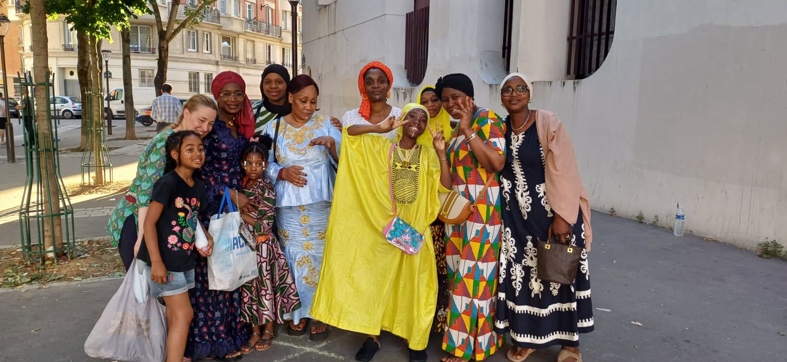
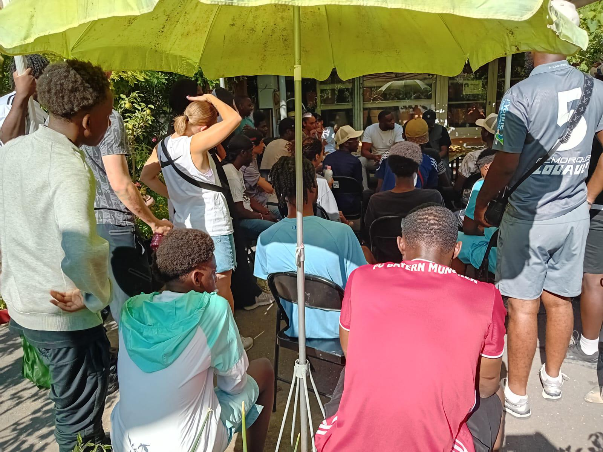

💡 Qui sommes-nous ?
Oxyjeunes est une association de quartier fondée en 2020, par les jeunes du quartier de l’Amiral Roussin, avec une vision simple : accompagner la jeunesse dans son développement personnel et collectif, tout en l’ouvrant au monde associatif et à l’engagement citoyen.
Née d’un besoin de se rassembler, de se soutenir et de créer des opportunités pour les jeunes du quartier, Oxyjeunes est un espace où chacun peut grandir, s’exprimer et prendre sa place dans la société
📖 Notre histoire
L’aventure Oxyjeunes commence en 2020, dans le quartier de l’Amiral Roussin, portée par un petit groupe de jeunes motivés à faire bouger les choses autour d’eux.
À nos débuts, nous avons lancé des petites actions locales : des tournois sportifs improvisés, des rassemblements de quartier, des moments de partage simples mais puissants. L’objectif était clair dès le départ : créer du lien, occuper l’espace, et donner aux jeunes un rôle actif dans la vie du quartier.
Après ces premiers pas prometteurs, nous avons marqué une pause stratégique afin de poser des bases solides pour structurer l’association. Cette période de recul nous a permis de nous former, de nous organiser, et de réfléchir à l’impact que nous voulions réellement avoir.
En 2023, Oxyjeunes revient plus fort, avec une équipe renforcée, des idées plus claires, et une envie encore plus grande d’agir. Depuis, nous avons multiplié les actions dans notre quartier et bien au-delà.
Nous sommes particulièrement fiers d’avoir mené des projets solidaires à l’international, notamment au Mali, en Mauritanie et au Sénégal, preuve que notre engagement local peut aussi avoir une portée globale.
Aujourd’hui, Oxyjeunes continue de grandir, fidèle à ses valeurs d’entraide, d’engagement et de transmission.
Des mamans du quartier aux bénévoles, notre force c’est la famille, l’entraide et la transmission.


📌 Quelques chiffres
Nos valeurs
- Bienveillance et respect
- Responsabilisation et confiance
- Esprit de famille et d’entraide
Envie d’aider ?
Donner, participer, relayer, proposer une compétence: chaque geste compte.